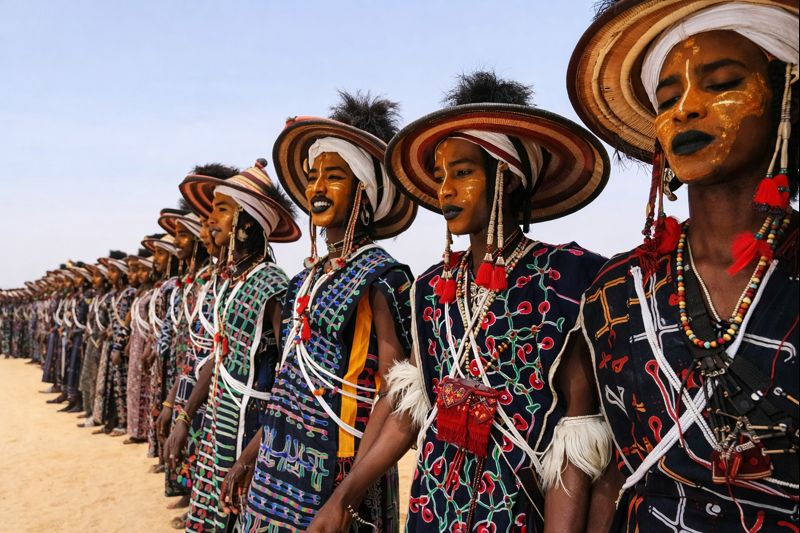

Niamey
55k
Musée National Boubou Hama
Un musée en plein air exceptionnel présentant les habitats et l'artisanat du Niger

RetourTerre d'hospitalité millénaire entre fleuve majestueux et dunes d'or
Le Niger est une terre de légendes, un trait d'union fascinant entre l'Afrique subsaharienne et le monde méditerranéen. Dominé par l'immensité du Sahara, le pays abrite des joyaux architecturaux comme la Grande Mosquée d'Agadez, classée à l'UNESCO, et les dunes spectaculaires du Ténéré. Au sud, le fleuve Niger irrigue des plaines fertiles et abrite les dernières girafes blanches d'Afrique de l'Ouest à Kouré. Le Niger est également un sanctuaire de biodiversité avec le Parc National du W, où lions, léopards et éléphants s'épanouissent en toute liberté. C'est surtout un pays de rencontres, où les peuples Touareg, Haoussa, Peul et Djerma partagent une culture de l'hospitalité unique au monde.
Explorez les 15 sites légendaires du Niger
Un musée en plein air exceptionnel présentant les habitats et l'artisanat du Niger

Le plus grand sanctuaire de faune sauvage d'Afrique de l'Ouest

Un chef-d'œuvre de l'architecture soudanaise en banco culminant à 27m

Montagnes de granit noir contrastant avec les sables dorés, terre des Touaregs

L'"Océan de sable" et ses dunes infinies, l'un des déserts les plus mythiques au monde

Demeure historique richement décorée au coeur du quartier traditionnel de Birni

Dernier troupeau de girafes blanches d'Afrique de l'Ouest vivant en liberté

Rempart naturel impressionnant marquant l'entrée dans le grand désert du Ténéré

Ancien carrefour caravanier célèbre pour ses salines et ses palmeraies

Point culminant du pays à 2022m, oasis de verdure au milieu des cimes

Carrefour entre le monde sédentaire et nomade, célèbre pour son artisanat

Le centre du commerce et de la culture Haoussa au Niger
Lieu du célèbre rassemblement annuel des éleveurs nomades, la Cure Salée
Haut lieu de la culture Djerma et siège d'un sultanat historique
Une zone humide unique aux portes du désert, influencée par le Lac Tchad
L'harmonie entre fleuve et désert, le coeur battant du Sahel.
Le Niger est une mosaïque culturelle fascinante où se côtoient agriculteurs sédentaires et pasteurs nomades. La culture haoussa au sud, djerma-songhaï le long du fleuve, et touarègue et toubou au nord, créent une identité nationale riche de sa diversité. L'histoire du Niger est marquée par les grands empires sahéliens et les cités-états caravanières comme Agadez, véritable porte du Sahara. L'artisanat, de la maroquinerie fine à la joaillerie en argent, témoigne d'un savoir-faire millénaire. La Cure Salée à In-Gall ou le Gerewol des Peuls Wodaabe sont des célébrations spectaculaires qui illustrent la vivacité des traditions nigériennes.
La résilience et la noblesse des Touaregs, les "Hommes Bleus" du désert, maîtres de l'Aïr et du Ténéré.
L'architecture unique en terre (banco) d'Agadez et de Zinder, classée au patrimoine mondial.
Les polyphonies nomades et la musique moderne inspirée des traditions ancestrales, comme le Blues Touareg.
Un pilier de la cohésion sociale nigérienne, favorisant la paix et l'humour entre les différentes ethnies.

L'excellence de l'artisanat nigérien. De l'argent ciselé d'Agadez à la maroquinerie Touareg.
 Emblème
Emblème
Pendentif traditionnel touareg en argent pur, ciselé à la main par les maîtres orfèvres d'Agadez.
 Artisanat
Artisanat
Maroquinerie fine en peau de chèvre, ornée de motifs géométriques traditionnels et de franges.
 Tradition
Tradition
Couverture traditionnelle tissée en bandes de coton colorées, spécialité de la ville de Zinder.
Vases décoratifs en terre cuite réalisés par les potières du village de Boubon au bord du fleuve Niger.
Fines tranches de bœuf séchées au soleil et assaisonnées aux épices et à la pâte d'arachide.
Service à thé traditionnel (théière, verres) pour revivre la cérémonie du thé saharienne.

Niamey, Luxe & Spa

Niamey, Moderne & Chic

Niamey, Grand Standing

Niamey, Bord du Fleuve

Niamey, Historique

Agadez, Charme Saharien
La cuisine nigérienne est savoureuse et nourrissante, basée sur les céréales locales comme le mil et le sorgho, ainsi que la viande grillée.
Ragoût de viande épicé avec des oignons, des tomates et du piment, un classique du fleuve.
Le snack national : viande de bœuf séchée et épicée, à la fois croquante et savoureuse.
Petites galettes de riz fermenté, frites et servies avec du sucre ou une sauce épicée.
Riz blanc nappé d'une sauce onctueuse aux cacahuètes pilées et à la viande.
Boule de mil consistante servie avec une sauce de légumes ou de viande.
Fine semoule de mil servie avec des légumes du désert et de la viande séchée.
La boisson de l'hospitalité : trois thés successifs (amer, sucré, suave) servis sous la tente.
Infusion d'hibiscus fraîche et parfumée, la boisson préférée pour se désaltérer au Sahel.
Viande grillée au feu de bois avec des épices Kankankan, omniprésentes dans les rues.
Dattes fraîches ou séchées provenant des oasis du nord, un concentré d'énergie.
Salade de haricots locaux (cornilles) assaisonnée à l'huile et au piment.
Soupe revigorante très épicée, appréciée pour les grandes occasions.
Vivez la ferveur des grandes rencontres traditionnelles du Niger.
Le plus grand rassemblement de nomades à In-Gall (Septembre), avec courses de chameaux et danses Gerewol.
Célébration traditionnelle spectaculaire de la fin du ramadan avec défilés et musiques touarègues.
Le grand défilé équestre du Sultan de Zinder, une démonstration de faste et de tradition Haoussa.
La période idéale. Les journées sont chaudes mais supportables et les nuits sont fraîches. C'est le moment parfait pour les expéditions dans le désert et les visites de parcs.
Fin de la saison des pluies. La nature est verdoyante au sud et c'est la période des grandes fêtes nomades comme la Cure Salée. Attention toutefois à la chaleur résiduelle.
Consultez les recommandations de voyage. Niamey est généralement calme. Pour le désert, utilisez exclusivement des agences de voyage certifiées avec escorte.
Vaccin fièvre jaune obligatoire. Prévention du paludisme fortement recommandée. Buvez exclusivement de l'eau en bouteille ou filtrée.
Visa obligatoire pour la plupart des nationalités. Obtenez votre visa auprès de l'ambassade du Niger avant le départ.
Franc CFA (XOF). L'économie repose sur l'espèce. Quelques distributeurs à Niamey acceptant les cartes internationales.
Expert Sahara & Aïr
Natif d'Agadez, Moussa est un guide touareg chevronné qui connaît chaque dune du Ténéré et secret du massif de l'Aïr.
Experte Culture & Artisanat
Spécialiste de l'histoire des empires sahéliens, Fati vous fera découvrir les richesses de Niamey et de Zinder.
Guide Safari & Parc W
Pisteur passionné, Abdou vous accompagnera dans le Parc National du W pour une observation inoubliable de la faune.